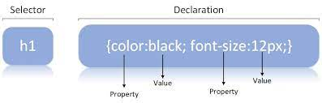

CSS was developed by W3C (World Wide Web Consortium) in 1996 for a rather simple reason. HTML element was not designed to have tags that would help format the page. You were only supposed to write the markup for the web page.

Tags like font were introduced in HTML version 3.2, and it caused quite a lot of trouble for web developers. Due to the fact that web pages have different fonts, colored backgrounds, and multiple styles, it was a long, painful, and expensive process to rewrite the code. Thus, CSS was created by W3C to solve this problem.